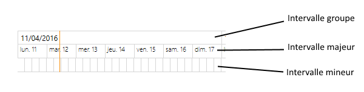

Important : cette partie ne concerne que le client WPF, cette fonctionnalité n'existant pas dans le client HTML5.
L'objet Gantt propose trois échelles de temps, définissant respectivement un intervalle "groupe", un intervalle "majeur" et un intervalle "mineur".
Par défaut, seul l'intervalle "groupe" et "majeur" sont affichés.

Pour gérer l'affichage/masquage et le formatage de ces intervalles, il faut utiliser les options GANTT_OPT_TIMERULER_*
Pour ajouter une échelle, avec une granularité d'une semaine :
ObjectOption.Option = GANTT_OPT_TIMERULER_GROUP
ObjectOption.OptValue = GANTT_TIMERULER_1_WEEK
XmeGanttSetOption(IdGantt, ObjectOption)
Pour retirer une échelle :
ObjectOption.Option = GANTT_OPT_TIMERULER_GROUP
ObjectOption.OptValue = GANTT_TIMERULER_NONE
XmeGanttSetOption(IdGantt, ObjectOption)
Pour revenir au format par défaut d'une échelle :
ObjectOption.Option = GANTT_OPT_TIMERULER_GROUP_FORMAT
ObjectOption.OptValue = GANTT_TIMERULER_FORMAT_DEFAULT
XmeGanttSetOption(IdGantt, ObjectOption)
Si toutes les échelles de temps sont retirées, l'objet affiche automatiquement l'échelle "groupe" et "majeur".
Toutes les granularités sont disponibles pour toutes les échelles. Le développeur veillera à la cohérence du tout.
La liste des granularités possibles est visible sur la page des options.
Formatage
Le formatage du texte dans les intervalles "groupe" et "majeur" se fait via les options GANTT_OPT_TIMERULER_GROUP_FORMAT et GANTT_OPT_TIMERULER_MAJOR_FORMAT.
Le paramètre est une chaîne compréhensible par le langage C#.
Sa forme est : "{0:xxxxx}" ou "xxxxx" est remplacé par le formatage voulu. Les différentes possibilités sont expliqués dans la documentation de Microsoft accessible ici : https://msdn.microsoft.com/fr-fr/library/8kb3ddd4(v=vs.110).aspx.
Exemple :
Dans la capture ci-dessous, les formatages sont : "{0:dd/MM/yyyy}" et "{0:ddd dd}".
Pour avoir un formatage sous la forme "lundi le 11 avril 2016", le format est : "{0:dddd le dd MMMM yyyy}"
Représentation
Par défaut, à l'écran, 1 pixel représente 30 minutes. Il est possible de modifier cette échelle via l'option GANTT_OPT_PIXEL_LENGTH. La valeur minimale est 1, ce qui veut dire que 1 pixel à l'écran représente 1 minute.
Voir l'exemple de programmation complet.